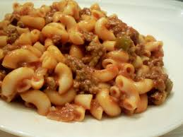

Description
This is a simple recipe to make your high protein, low calorie pasta.
Ingredients
- 1 box of protein pasta
- 1 onion
- 2 pounds of 90% lean beef. (It can be leaner, just make sure it is at least 90%)
- Garlic powder
- Onion powder
- Standard tomato sauce
- 2 cups of fat free cottage cheese
Steps
- Start heating up water in a pot and cook the pasta until it is done.
- Dice your onions.
- Cook your beef until ready.
- Put in a generous amount of garlic and onion powder into the beef.
- Once the beef is cooked, remove the excess fat.
- Blend your cottage cheese until smooth and add into the beef. (You do not need to blend it, but this helps with consistency.)
- Pour in your sauce and pasta.
- Mix and distribute evenly accross 7 plates.